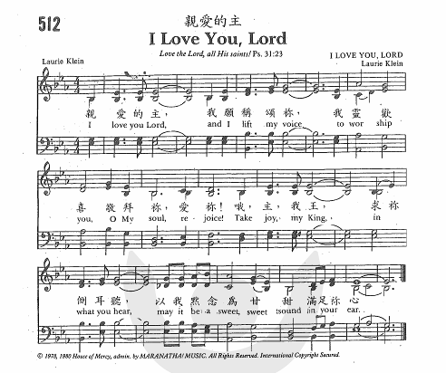

|
|
親愛的主 |
|
I love You, Lord, and I lift my voice |
親愛的主，我願稱頌祢， |
|

|
|
|
|
|
-

-
世紀頌讚21讚美天上君王
https://youtu.be/mqb9Q9lARQY?list=PL544A0FE3A5864668
-
主我爱你(I
Love You, Lord) - YouTube
-
主我愛你Lord
I Love You - YouTube
-
親愛的主 I love You Lord
-
親愛的主 I LOVE YOU LORD 512
-
Maranatha! - I Love You Lord [with
lyrics]
https://hymnary.org/person/Klein_L
The Kleins, now parents of two grown
daughters, live in Dearpark, Washington. Both have served on staff at various
churches over the years, but their focus these days is House of Mercy, through
which Bill acts as consultant to worship leaders of various denominations. A
sampling of their song writing, including a stunning version of "I Love You,
Lord", is available on a 1996 independent recording called All My Days
Hit songwriter Laurie Klein finds new
voice in blog, poetry


Texts by
Laurie Klein (1)
I love you, Lord, and I lift my voice
Tunes by
Laurie Klein (1)
I LOVE YOU LORD
http://www.spokesman.com/stories/2016/dec/29/judith-spitzer-hit-songwriter-laurie-klein-finds-n/
I Love
You, Lord 教會聖詩512亲爱的主
I love you, Lord, and I lift my voice
詩歌賞析: Story
behind the song: 'I Love You Lord' - Lifestyle
Scriptural Reference:
Psalms 18:1 - Psalms 19:1 - Matthew
22:37 - Ruth 3:1 - Ruth 3:2 - Ruth 3:3 - Ruth 3:4 - Ruth 3:5 - Ruth 4:13 - Ruth
4:14 - Ruth 4:15 - Ruth 4:16 - Ruth 4:17.
By age 24, Laurie Brendemuehl had met
and married Bill Klein, and the Lord had given them their first child, a little
girl. Bill was a student at Central Oregon Community College studying Forest
Technology, and... well, let me have Laurie tell you the story, as she told it
to me:
“It was a dark time in my life. We had
no extra money, no friends nearby, no church home and my husband was busy all of
the time with his studies. I didn’t drive, so I couldn’t get away. We lived on a
highway in a mobile home, so I couldn’t even put the baby in a stroller and go
for a walk. Our only neighbors were people long retired and tired of life. When
I needed some encouragement there was no extra money for long distance calls to
family or friends. I was lonely. The only thing I was committed to was trying to
get up each morning before our baby, then a toddler, and spend some time with
Jesus. I knew that was where the ‘life’ was.”
“The day the song came, I had gotten up
early and was sitting with my Bible and my guitar. I realized that I didn’t have
anything in me to sing to Jesus. I just didn’t have anything in me to offer Him.
I was so empty. So, I prayed and said to the Lord, ‘If you want to hear me sing,
would you give me something that you would like to hear?’”
“I started strumming on the guitar and
the first words came out of my mouth with absolutely no effort. I love you Lord,
and I lift my voice to worship You. I scribbled them on a piece of paper, just
in case I would want to remember them, and sing them again. Those words meant a
lot to me.”
“I wondered if I could play the melody
again - if I would even remember. I played and sang the two lines again. They
were still there, in my mind. The last two lines just followed as effortlessly
as the first two had come. It was a gift from God that just wrote itself.”
“Though it is a very simple song, it
changed everything for me, and it still is changing life for me. When you are in
a dark valley and the Lord gives you light, it makes all the difference, and you
keep growing.”
Then Laurie shared with me this
heartwarming story:
“The most meaningful time that I ever
heard anyone sing my song was in the fall of 2000 while my husband and I were in
a Discipleship Training School. Late one night in the dormitory, I heard a baby
crying. I slipped down the hall to the outside of the door just to pray for the
baby, that it would be able to sleep. As I was praying outside the door, I heard
the mother singing a song, but the little one kept crying. She then began to
sing “I Love You Lord,” and while she was singing, the baby fell asleep. The
mother had no idea that the one who wrote the song was just outside the door.”
“We love Him, because he first loved
us.” - I John 4:19